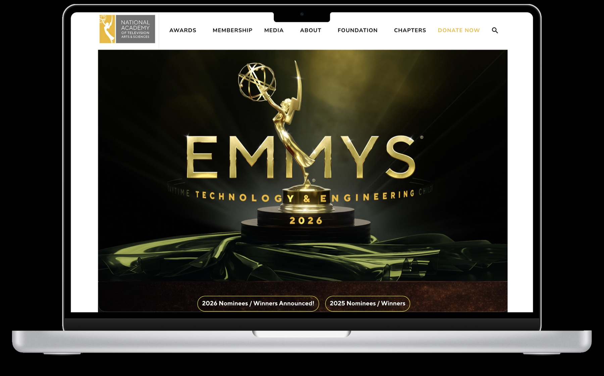
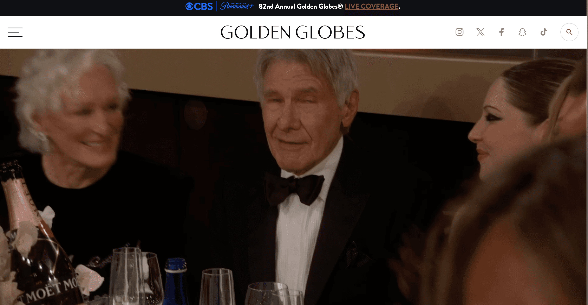
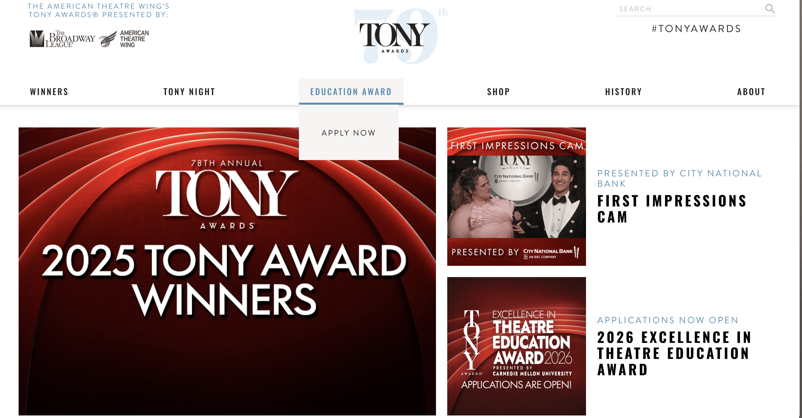
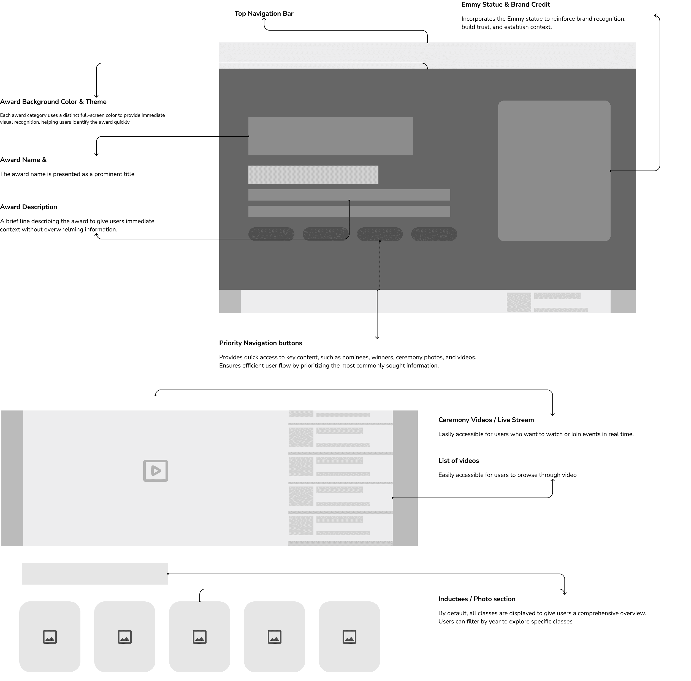

02 / CONTRACT · WEBSITE REDESIGN
The Emmys
A modular website redesign for finding awards, nominees, and winners across categories.

01 / OVERVIEW
One structure for many award categories.
I designed a reusable category-page experience within the Emmys’ existing design system.
The Emmys website presents television awards, nominees, and winners across categories. Client work as a contract UX/UI designer at Newtz Family Circus, subcontracted on the Emmys website.
02 / PROBLEM / USER CHALLENGE
Inconsistent pages make visitors relearn the structure.
Category pages used different formats and dense text. The client’s feedback was that they felt individually designed; visitors lacked a consistent place to look for recurring information.
Evidence and interpretation
I compared 3 awards websites: the Oscars, Golden Globes, and Tony Awards. I used the hierarchy comparison to give recurring information a consistent home in the shared template, instead of relying on imagery to make dense content scannable.
View competitive research



03 / SOLUTION
Standardize navigation; let content vary.
Design decision
Give repeated information a consistent home while allowing category-specific sections to flex. Keep the client’s established type and color system.
How it helps
A shared hierarchy supports scanning across awards and gives editors a repeatable structure for updates.



04 / IMPACT / OUTCOME
The template was approved and launched.
Early client feedback shifted the direction from individual pages to one modular template. The approved redesign launched, followed by ongoing updates.
Deliverables included competitive research, information architecture, wireframes, and the category template. No quantitative usability or post-launch results are documented.
05 / OPPORTUNITIES / TARGET USERS
Test both browsing and publishing.
Visitors need to locate awards and winners across categories; editors need to maintain changing content.
The next opportunity is to test an award-finding task across two categories and an editor update task. This would check whether the shared structure works beyond visual consistency.
06 / REFLECTION
Consistency needs room for unequal content.
The main trade-off was a common hierarchy across categories with different amounts of information. Reusable modules offered consistency without forcing identical content.
Next time, define visitor and editor success criteria before approval, then validate the template with representative tasks.